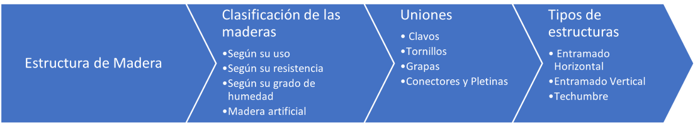
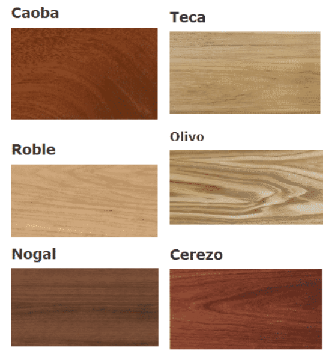
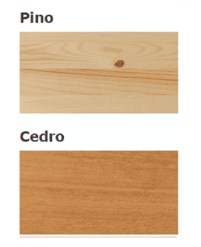

Estructura de Madera
Contents
{kind=link}
19. Estructura de Madera#
Las estructuras de madera se forma por la unión de elementos, mediante elementos auxiliares, clavos, tornillos, pernos, con anclaje, conectores, entre otros.
Un sistema formado por entramados de piezas de estos materiales corresponde a los muros de madera. Soleras (piezas inferiores), carreras (piezas superiores), montantes (pies derechos), cadenas (piezas horizontales que van entre los montantes) y diagonales (o tirantes, que ayudan a rigidizar los extremos de la estructura) conforman su composición principal. Estos pilares están espaciados a intervalos de cuarenta a sesenta cm. Las paredes de madera se pueden cubrir con una variedad de materiales, que incluyen placas de yeso, placas de fibrocemento, placas OSB, madera machihembrada, madera contrachapada ranurada, revestimiento y aglomerado (Sodimac, 2022).
{kind=link}
19.1. Clasificación de las maderas#
19.1.1. Según su uso#
19.1.1.1. Para uso estructural#
Grado Estructural N°1
Grado Estructural N°2
Grado Estructural N°3
Grado Estructural N°4
19.1.1.2. Maderas de Uso General#
19.1.2. Según su resistencia#
19.1.2.1. Maderas rojas o duras#
De mayor resistencia.
{kind=link}
19.1.2.2. Maderas blancas o blandas#
De menor resistencia.
{kind=link}
19.1.3. Según su grado de humedad#
Madera Verde: Tiene más de un 30% de humedad.
Madera Húmeda: Tiene entre un 20% y un 30% de humedad.
Madera Seca al Aire: Tiene entre un 13% y un 18% de humedad, que es la cantidad máxima que se puede secar de forma natural.
Madera Seca en Cámara: La única forma de lograrlo es a través del secado artificial en cámara, y se encuentra en rangos por debajo del 12%.
19.1.4. Madera artificial#
La madera artificial, a diferencia de la madera natural, tiene los siguientes beneficios:
Estabilidad dimensional: Las fibras de madera que se recomponen en los tableros ya no pueden deformarse con el paso del tiempo al alternar su orientación.
Economía circular: Los residuos de procesamiento, los materiales de baja calidad o las piezas recicladas también se incluyen en la preparación de tableros derivados de la madera, dándoles un nuevo propósito.
Sostenibilidad en términos de medio ambiente: en lugar de talar muchos árboles, las tablas de madera se fabrican con los restos de materiales que estaban destinados a la eliminación.
{kind=link}
{kind=link}
{kind=link}
{kind=link}
{kind=link}
{kind=link}
{kind=link}
{kind=link}